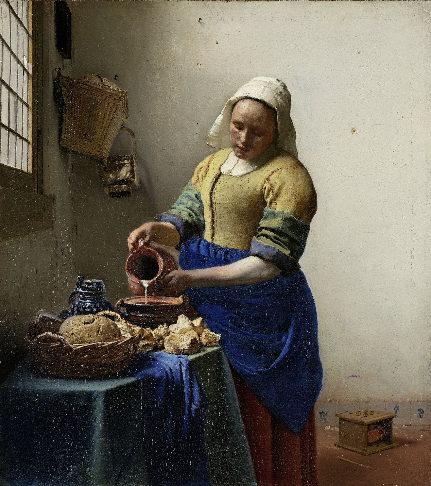

2015-11-13
「所有透過API可以取得的資料和圖像若非屬於公眾領域就是以CC0授權。這些資料和圖像都不用支付權利金，且可以在無須荷蘭國家博物館(Rijksmuseum)允許的情況下被複製、散佈、修改、和使用。」-- 荷蘭國家博物館網站的使用條件說明
Rijksmuseum是荷蘭於1800年成立、致力於藝術及歷史的國家博物館，實體館藏超過一百萬件。2003-2013年間由於建物整修，因此只開放800平方公尺的展區，就算2013年後的新館展區多達22000平方公尺，卻也只能展出約莫8000件展品。為了能讓更多館藏被看到，荷蘭國家博物館花費很多心力進行館藏數位化。
荷蘭和多數歐洲國家一樣，作品在作者過世後70年便自動進入公眾領域，讓任何人都能自由複製和散布這些作品。而且根據多數歐洲的著作權法，公眾領域作品的複製品並不會產生新的保護，因此被數位化後的公眾領域作品仍然屬於公眾領域。除非公眾領域作品被改造後產生創新價值，才會有新的著作權主張空間。
2011年，荷蘭國家博物館開始與Europeana基金會合作，欲使公眾領域圖像及詮釋資料(metadata)能在Europeana入口網站取用。同年年底，荷蘭開放文化資料計畫(Open Cultuur Data initiative)向荷蘭國家博物館申請於Apps4Netherlands競賽中使用該館館藏，此競賽意圖讓機構與程式設計師、設計師合作善用開放取用的資料。
最初，荷蘭國家博物館館藏部門謹慎的只提供他們一組少有人知的中國畫作。然而，行銷部門出面指出應該要提供最好的素材，他們認為博物館的核心目標就是要讓公眾熟悉館藏，網路是一個很好的通路，數位化館藏會吸引人們進一步想要購票參觀。因此，他們最終決定將已經無著作權保護的梵谷、維梅爾、林布蘭等人的名作都進行數位化。

(維梅爾的名畫，你可以註冊Rijksstudio後免費下載圖片。)
做出這項決定後，荷蘭國家博物館對於授權方式卻產生爭執。館方希望使用「創用CC 姓名標示」的授權方式，要求使用者使用圖像時標示出處，Europeana、維基媒體基金會、開放知識基金會則認為應該讓數位化後的作品仍維持公眾領域狀態。幾經討論後，這些數位化圖像最終以「公眾領域貢獻宣告」（CC0）授權釋出，在圖像的詮釋資料裡都清楚標示出作品的創作年代及公眾領域法律地位。
荷蘭國家博物館最終做出此決議，主要有三個理由：
- 博物館在實務上很難控制數位化圖像的使用。
圖像一旦在線上開放，便會流散在網路上廣為使用，若採用「CC 姓名標示」授權，博物館必須支付額外成本追查使用者是否標上出處，對於博物館將形成龐大負擔。
- 網路上早已存在許多版本畫質不佳、來源不可靠的數位化藝術作品。
荷蘭國家博物館認為既然網路上都能找到這些圖片了，何不由博物館提供高品質、色澤近似原作的圖片版本？的確，荷蘭國家博物館一開放高品質圖像便立即被維基百科採用，之前網路上流傳的較差版本則被迅速淘汰。
- 開放圖像可以讓館藏在不同平台上被更多使用者取用。
目前荷蘭國家博物館有6499張圖像都上傳到維基共享資源，其中2175張圖像都用於維基百科的文章中。透過維基百科，大幅提升使用者對這些作品的使用率，使用者無須先進入博物館網站才知道有這些作品存在。
一開始，荷蘭國家博物館網站提供兩種類型的圖像，一種是jpg檔、約2MB，可以自由下載，另一種是tiff檔、高達200MB，需要支付40歐元才能下載。他們意外發現，「免費下載」為網站吸引了大量使用者，也順帶提升了需要高解析度使用者的流量，導致荷蘭國家博物館在2012年光靠販售圖像就獲得18萬1千歐元。
不過，荷蘭國家博物館為了數位化館藏每年要支出10萬歐元，圖像收益並無法打平既往支出，甚至還要為了付費圖像的業務支出額外行政成本。於是，2013年，荷蘭國家博物館便放棄收費，將目標定為「做善事兼推廣館藏與博物館」，將重心擺在利用藝術基金會的資金來數位化所有館藏。
荷蘭國家博物館除了在網站上免費提供公眾領域館藏數位圖像的下載，還進一步於2012年成立Rijksstudio，讓使用者可以輕易的在其網站上自行重新組織館藏或利用館藏進行創作，像是改編藝術作品、設計專屬自己的資料夾、衣服、手機殼等。他們每年3月都會舉辦「Rijksstudio大賞」，前三名可以獲得10000、2500、1000歐元的獎金，作品會在館內展出。當然，荷蘭國家博物館也開放API，歡迎程式設計師善用館藏開發新軟體，在2012年春季前便已經開發了13個APP。
荷蘭國家博物館光是開放的前三個月，就有11萬多件作品被下載，網站使用者增加了34%，Rijksstudio則吸引了3萬多人註冊，網站使用時間和平板使用者也都上升。另外，他們也因此成為開放館藏的經典案例，吸引了國際媒體報導以及眾多開發者與設計師的注目，並常常受邀參與各個博物館和文化資產研討會。不得不說，開放政策帶給荷蘭國家博物館驚人的宣傳成效，而且讓他們的館藏能走出實體博物館，接觸到更多使用者、產生更多影響力，其決策的動機與過程都值得國內有致於開放的文化機構參考。
註：最後來看看荷蘭國家博物館的資料管理人Lizza Jongma對於開放館藏的看法吧。Lizza指出，幸好館藏主要是公眾領域，所以開放起來特別容易；而且他認為身為教育機構和博物館，盡可能的分享最能達成機構的政策方針。
參考資料：
- Democratising the Rijksmuseum: Why did the Rijksmuseum make available their highest quality material without restrictions, and what are the results? / Joris Pekel (Europeana Foundation)
- Sharing is Caring 2014：Openness and sharing in the cultural heritage sector / Merete Sanderho (Statens Museum for Kunst)